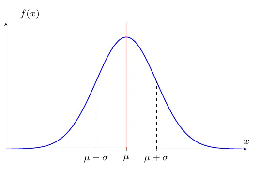

Gaussian Function
The normal (Gaussian) distribution is arguably the most important distribution
in all of statistics and machine learning. Before defining it, we study the underlying
Gaussian function and its integral properties. The key challenge is that the
Gaussian function has no elementary antiderivative, yet its improper integral over all of
\(\mathbb{R}\) can be evaluated exactly, which makes the normal distribution analytically tractable.
A Gaussian function is defined as:
\[
f(x) = e^{-x^2}
\]
and often is parametrized as
\[
f(x) = a e^{-\frac{(x-b)^2}{2c^2}} \tag{1}
\]
where \(a, b , c \in \mathbb{R}, \text{ and } c \neq 0\).
The family of Gaussian functions does not have elementary antiderivatives. To represent the integral of Gaussian functions,
we use the special function known as the error function:
\[
\text{erf }(z) = \frac{2}{\sqrt{\pi}} \int_{0}^z e^{-t^2}dt. \qquad \text{erf}: \mathbb{C} \to \mathbb{C}
\]
Then,
\[
\int e^{-x^2} dx = \frac{\sqrt{\pi}}{2}\text{erf }(x) + C.
\]
On the other hand, their improper integrals over \(\mathbb{R}\) can be evaluated exactly using
Gaussian integral:
Theorem 1: Gaussian Integral
\[
\int_{-\infty} ^\infty e^{-x^2} dx = \sqrt{\pi}.
\]
Note: The generalized Gaussian integral is given by
\[
\int_{-\infty} ^\infty e^{-ax^2} dx = \sqrt{\frac{\pi}{a}} \qquad a > 0 \tag{2}
\]
Proof:
Let \(I = \int_{-\infty} ^\infty e^{-x^2} dx\). Then
\[
\begin{align*}
I^2 &= \int_{-\infty} ^\infty \int_{-\infty} ^\infty e^{-u^2} e^{-v^2} du dv \\\\
&= \int_{-\infty} ^\infty \int_{-\infty} ^\infty e^{-(u+v)^2} dudv.
\end{align*}
\]
Using the polar coordinates, let \(u = r\cos \theta\), and \(v = r\sin \theta\) and then
\(u^2 + v^2 = r^2\) and \(dudv = r dr d\theta\).
Thus,
\[
\begin{align*}
I^2 &= \int_{0} ^{2\pi} \int_{0} ^\infty e^{-r^2} r dr d\theta \\\\
&= \int_{0} ^{2\pi} 1d\theta \int_{0} ^\infty e^{-r^2} r dr. \\\\\
\end{align*}
\]
Here, let \(w = -r^2\) and \(dw = -2rdr\). Then
\[
\begin{align*}
I^2 &= (2\pi) (-\frac{1}{2}\int_{0} ^{-\infty} e^{w} dw) \\\\\
&= (2\pi) (\frac{1}{2}\int_{-\infty} ^0 e^{w} dw)\\\\\
&= (2\pi)(\frac{1}{2}\cdot 1)
\end{align*}
\]
Therefore,
\[
I = \sqrt{\pi}.
\]
This is the case where \(a =1\) in the generalized Gaussian integral. We extend this result to the
generalized case with a scaling factor \(a>0\).
Let \(u = sqrt{a}x\) and then \(x = \frac{u}{\sqrt{a}} \) and \(dx = \frac{1}{\sqrt{a}}du\).
Substituting these into the integral (2)
\[
\begin{align*}
& \int_{-\infty} ^\infty e^{-a(\frac{u}{\sqrt{a}})^2} \frac{1}{\sqrt{a}}du \\\\
&= \frac{1}{\sqrt{a}} \int_{-\infty} ^\infty e^{-u^2}du \\\\
&= \frac{1}{\sqrt{a}} (\sqrt{\pi}) \\\\
&= \sqrt{\frac{\pi}{a}}.
\end{align*}
\]
Here, we use the parametrized Gaussian function (1).
Let \(u = \frac{x-b}{c}\), which implies \(x = cu + b \) and \(dx = cdu\). Then
\[
\begin{align*}
\int_{-\infty} ^\infty a e^{-\frac{(x-b)^2}{2c^2}} dx
&= \int_{-\infty} ^\infty a e^{-\frac{(cu)^2}{2c^2}}cdu \\\\
&= ac \int_{-\infty} ^\infty e^{-\frac{u^2}{2}}du
\end{align*}
\]
Using the Gaussian integral (3),
\[
\begin{align*}
\int_{-\infty} ^\infty a e^{-\frac{(x-b)^2}{2c^2}} dx
&= ac \int_{-\infty} ^\infty e^{-\frac{u^2}{2}}du \\\\
&= ac\sqrt{2\pi}. \tag{3}
\end{align*}
\]
Normal(Gaussian) Distribution
With the Gaussian integral established, we can now construct a proper probability density
function from the Gaussian function by choosing the parameters so that the total area under
the curve equals one.
Definition: Normal (Gaussian) Distribution
A random variable \(X\) has a normal (Gaussian) distribution with mean \(\mu \in \mathbb{R}\)
and variance \(\sigma^2 > 0\) if its p.d.f. is:
\[
f(x) = \frac{1}{\sigma \sqrt{2\pi}}\exp\!\left(-\frac{(x - \mu)^2}{2\sigma^2}\right), \quad x \in \mathbb{R}.
\]
We write \(X \sim \mathcal{N}(\mu, \sigma^2)\).
Note that the c.d.f. of the normal distribution does not have a closed form:
\[
F(x) = \int_{-\infty}^{x} \frac{1}{\sigma \sqrt{2\pi}}\exp\!\left(-\frac{(t - \mu)^2}{2\sigma^2}\right) dt
\]
but comparing with the expression (3), this is the gaussian integral with \(a = \frac{1}{c\sqrt{2\pi}}, \,
b = \mu, \text{ and } c = \sigma\) to make its value \(1\).

The above figure shows the normal p.d.f. curve. \(\mu\) is the center, and \(\sigma\) is the distance from
the center to the inflection point of the curve. The one reason the normal distribution is widely used in statistics
and machine learning as well, the parameters capture its mean and variance, which are essential properties of the distribution.
\[
\mathbb{E }[X] = \mu \qquad \text{Var }(X) = \sigma^2.
\]
So, in the normal distribution, measures of central tendency(mean, median, and mode) are the same.
The simplest and useful normal distribution is the one with zero mean and unit variance. We call it
the standard normal distribution denoted by
\[
Z \sim N(0, 1).
\]
Any normally distributed random variable can be "transformed" to a standard normal random variable. If
\(X \sim N(\mu, \sigma^2)\), then
\[
Z = \frac{X- \mu}{\sigma}\sim N(0, 1).
\]
This process is called standardization. This is just a special case of the linear transformation:
\[
Y = aX + b \sim N(a\mu+b, a^2\sigma^2).
\]
Here, \(a = \frac{1}{\sigma} \) and \(b = \frac{-\mu}{\sigma}\) and then you
get \(\mathbb{E}[\frac{1}{\sigma}x -\frac{\mu}{\sigma}] = 0 \) and
\(\text{Var }(\frac{1}{\sigma}x -\frac{\mu}{\sigma}) =1\).
The p.d.f. of \(Z\) is denoted by
\[
\phi (z) = f(x) = \frac{1}{\sqrt{2\pi}}e^{\frac{-z^2}{2}} \qquad z \in \mathbb{R}
\]
and c.d.f. of \(Z\) is denoted by
\[
\Phi (z) = P(Z \leq z) = \int_{-\infty} ^z \phi (u)du.
\]
Chi-Squared Distribution
If a single standard normal variable \(Z \sim \mathcal{N}(0,1)\) captures the behavior of
one random measurement, what distribution governs the sum of squared measurements?
This question arises naturally in statistics: whenever we compute a sample variance, we are
summing squared deviations. The answer is the chi-squared distribution, which
connects the normal distribution from this section to the
gamma distribution from the previous one.
Definition: Chi-Squared Distribution
Let \(Z_1, Z_2, \ldots, Z_\nu\) be independent standard normal random variables,
\(Z_i \sim \mathcal{N}(0, 1)\). The random variable
\[
Q = Z_1^2 + Z_2^2 + \cdots + Z_\nu^2 = \sum_{i=1}^{\nu} Z_i^2
\]
has a chi-squared distribution with \(\nu\) degrees of freedom,
written \(Q \sim \chi^2_\nu\). Its p.d.f. is:
\[
f(x) = \frac{1}{2^{\nu/2}\,\Gamma(\nu/2)}\, x^{\nu/2 - 1}\, e^{-x/2}, \quad x \geq 0.
\]
Comparing this p.d.f. with the gamma distribution
\[
f(x) = \frac{\beta^\alpha}{\Gamma(\alpha)} x^{\alpha-1} e^{-\beta x}
\],
we see that the chi-squared distribution is a special case:
\[
\chi^2_\nu = \text{Gamma}\!\left(\alpha = \frac{\nu}{2},\; \beta = \frac{1}{2}\right).
\]
This identification is not merely notational — it means that every property of the gamma
distribution (moment formulas, moment generating function, additivity) transfers directly
to the chi-squared distribution.
The mean and variance follow immediately from the gamma parameters:
\[
\mathbb{E}[Q] = \frac{\alpha}{\beta} = \nu, \qquad
\text{Var}(Q) = \frac{\alpha}{\beta^2} = 2\nu.
\]
The chi-squared distribution plays a fundamental role in statistical inference.
If \(X_1, \ldots, X_n\) are i.i.d. \(\mathcal{N}(\mu, \sigma^2)\) and we define the
sample variance \(s^2 = \frac{1}{n-1}\sum_{i=1}^{n}(X_i - \bar{X})^2\), then:
\[
\frac{(n-1)s^2}{\sigma^2} \sim \chi^2_{n-1}.
\]
This result is what allows us to construct confidence intervals for variances and to
define the Student's \(t\)-distribution,
which arises when we replace the unknown \(\sigma\) with the sample estimate \(s\).
Insight: The Gamma → Chi-Squared → Student's \(t\) Chain
The relationship between these distributions forms a coherent chain. The
gamma distribution is the general family for non-negative continuous
variables. Setting \(\alpha = \nu/2\) and \(\beta = 1/2\) specializes it to the
chi-squared distribution, which governs sums of squared normals.
The Student's \(t\)-distribution then arises as the ratio:
\[
T = \frac{Z}{\sqrt{Q/\nu}}, \quad Z \sim \mathcal{N}(0,1),\; Q \sim \chi^2_\nu,\; Z \perp Q
\]
where \(T \sim t_\nu\). In practice, \(Z\) represents the standardized signal
and \(Q/\nu\) represents the estimated noise level. When we don't know the true
variance \(\sigma^2\) and must estimate it from data, replacing \(\sigma\) with \(s\)
introduces extra uncertainty that thickens the tails - precisely captured by the
\(t\)-distribution's degrees of freedom parameter \(\nu = n - 1\).
Central Limit Theorem
The previous section defined the normal distribution and its properties for a single random variable.
In practice, however, we almost always work with collections of observations. A fundamental
question arises: if we average many independent measurements, what can we say about the distribution
of that average? The answer - provided by the Central Limit Theorem - is one of the
most remarkable results in all of mathematics: the average tends toward a normal distribution,
regardless of the underlying distribution of the individual measurements.
Now, we consider a set of random variables \(\{X_1, X_2, \cdots, X_n\}\). In random sampling, we assume that each
\(X_i\) has the same distribution and is independent of each other. We call it independent and identically distributed(i.i.d.).
In this case, a single sample mean \(\bar{X} = \frac{1}{n}\sum_{i=1} ^n X_i\) is not exactly equivalent to the population mean \(\mu\)
because there are many different sampling possibilities. However, the "average" of sample means is equal to \(\mu\):
\[
\begin{align*}
\mathbb{E}[\bar{X}] &= \mathbb{E}[\frac{1}{n}(X_1 + X_2 + \cdots +X_n)] \\\\
&= \frac{1}{n}[\mathbb{E}[X_1] + \mathbb{E}[X_2] + \cdots + \mathbb{E}[X_n]] \\\\
&= \frac{n\mu}{n} \\\\
&= \mu
\end{align*}
\]
Thus, the sample mean is an unbiased estimator of the population mean \(\mu\). On the other hand,
the sample variance \(s^2\) is a biased estimator of the population variance \(\sigma^2\):
\[
\begin{align*}
\text{Var }(\bar{X}) &= \text{Var }[\frac{1}{n}(X_1 + X_2 + \cdots +X_n)] \\\\
&= \frac{1}{n^2}[\text{Var }(X_1) + \text{Var }(X_2) + \cdots + \text{Var }(X_n)] \\\\
&= \frac{n \sigma^2}{n^2} \\\\
&= \frac{\sigma^2}{n}.
\end{align*}
\]
To make the estimator unbiased, we adjust the denominator:
\[
s^2 = \frac{1}{n-1} \sum_{i=1}^n (X_i - \bar{X})^2.
\]
At this point, you might wonder how we can make inferences about the unknown distribution of random variables in practice.
The Central Limit Theorem (CLT) provides a result: regardless of the underlying distribution of a population,
the distribution of the sample mean approaches a normal distribution as the sample size \(n\) becomes large enough. This remarkable
property is one of the reasons the normal distribution is widely used in statistics and forms the foundation of many statistical methods
and theories.
Theorem 2: Central Limit Theorem
Let \(X_1, X_2, \cdots, X_n\) be i.i.d. random variables with mean \(\mu\) and variance \(\sigma^2\).
Then the distribution of
\[
Z = \frac{\bar{X} - \mu}{\frac{\sigma}{\sqrt{n}}}
\]
converges to the standard normal distribution as the sample size \(n \to \infty\).
Note: The SD of \(\bar{X}\) is \(\sqrt{\frac{\sigma^2}{n}} = \frac{\sigma}{\sqrt{n}}\).
If the sample size \(n\) is large enough,
\[
\bar{X} \approx N(\mu, \frac{\sigma^2}{n})
\]
and also,
\[
\sum_{i =1} ^n X_i \approx N(n\mu , n\sigma^2).
\]
Note: For example, highly skewed distributions such as the exponential distribution requires
around \(n \geq 100\) for applying CLT.
The Central Limit Theorem (CLT) explains the ubiquity of the normal distribution, showing that any quantity arising from
the aggregate of many small, independent contributions will be approximately normally distributed. For a rigorous treatment
and a proof using moment generating functions, see Part 16: Convergence.
Beyond the CLT, the Gaussian distribution is fundamental in information theory as the distribution that
maximizes entropy for a fixed mean and variance - making it the "most random"
choice under these constraints.
Next, we introduce the Student's \(t\)-distribution,
which accounts for the additional uncertainty that arises when the population variance \(\sigma^2\)
is unknown and must be estimated from the sample.